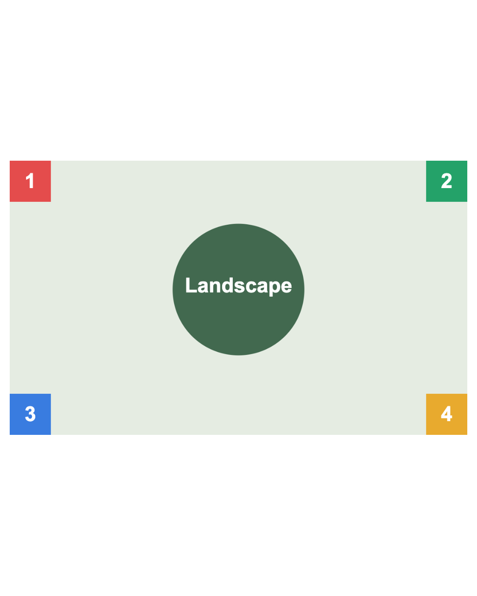
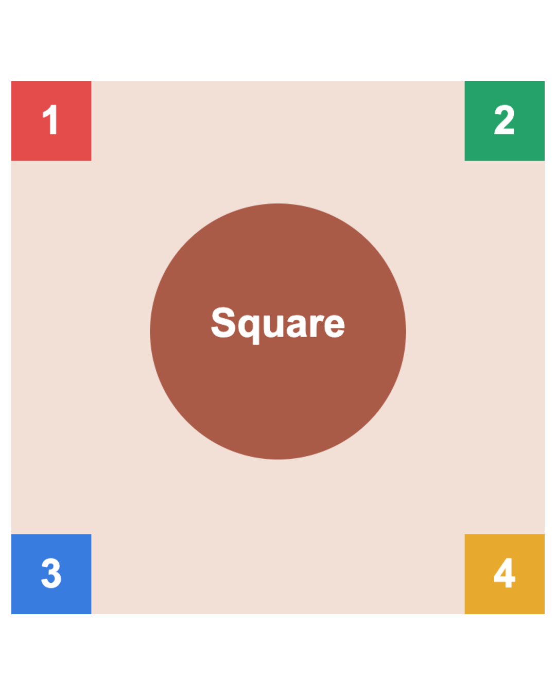
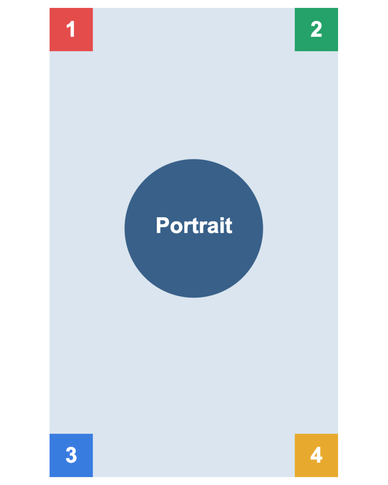

Social Post Image Maker
One frame for a mixed photo set.
Reorder. Download the PNG ZIP.
Free · local · English / 中文
github.com/LydiaTools/aspectory
A shared 4:5 frame · 1080 × 1350



All four marked corners stay in each export.
Actual exports of the tool's original test illustrations.